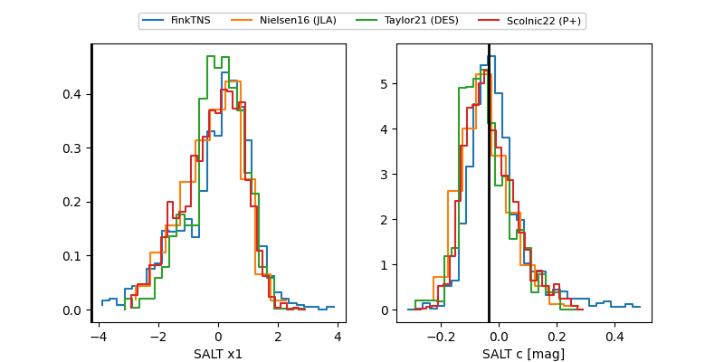

FINK: ZTF25abskgqe
Lasair: ZTF25abskgqe
ALeRCE: ZTF25abskgqe
TNS: 2025ydc
YSE: 2025ydc
ZTF25abskgqe (ztf,fink)
2025ydc (tns,yse)
equatorial (ra, dec) = (288.9908,+37.34042)
galactic (l, b) = (69.1312,+11.59552)

last atlasc=19.12, ztfg=18.94, ztfr=18.92
1 atlasc, 3 ztfg, 2 ztfr detections